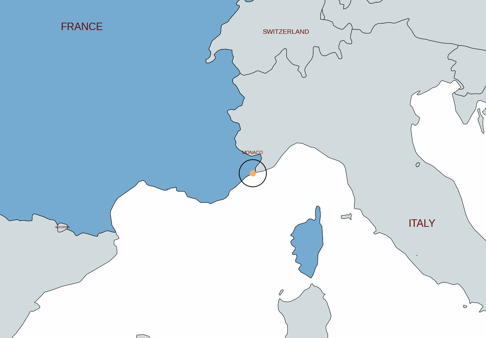
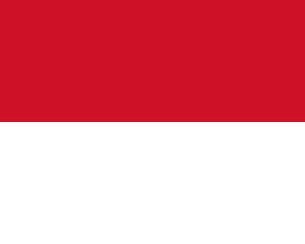
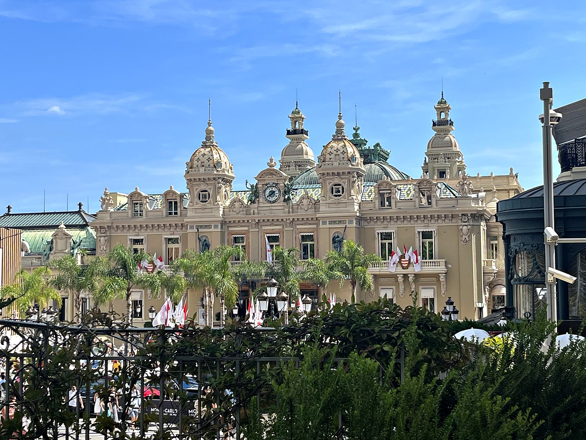
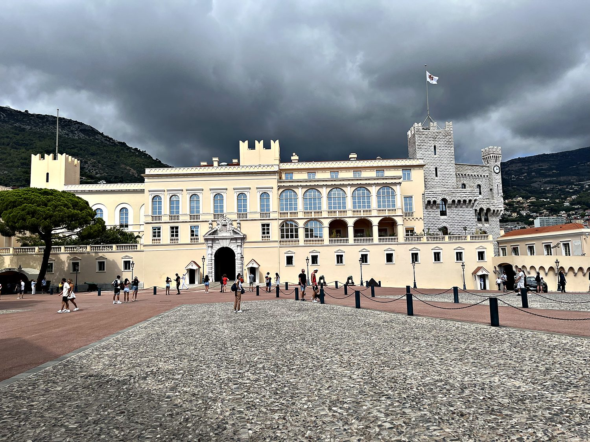
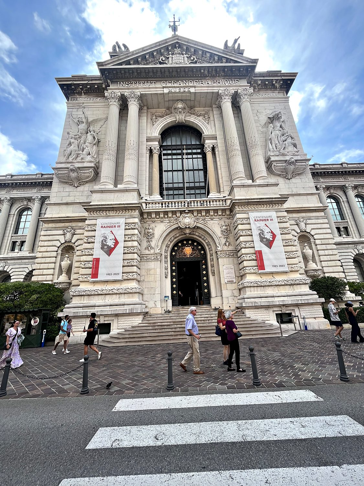

I made a brief visit to Monaco in September 2023, hopping off the train for a few hours to explore the world's second-smallest country on foot. Squeezed onto barely two square kilometers of steep Riviera coastline between the mountains and the Mediterranean, Monaco is a place of almost cartoonish wealth. Its harbor is so crammed with superyachts that there is scarcely room for water between them, and not a single industrial vessel in sight. It turned out to be more pleasant than I expected, if nothing extraordinary: compact and eminently walkable, though the relentless hills made finding the right path a genuine workout. In a few hours I managed to take in most of what the principality has to offer, from the prince's palace to the famous casino, with a few characteristically Monégasque brushes with formality and exclusivity along the way.
Monaco is essentially a single dense city that doubles as an entire sovereign nation, and it divides into a handful of distinct quarters clinging to the hillsides. I wandered from the sporting district past the Louis II stadium to the Princess Grace rose garden, which is a surprisingly serene patch of green named for the Hollywood star Grace Kelly, who became princess of Monaco. I then meandered down to the waterfront to gawk at the endless parade of yachts lining Port Hercule. From there I climbed to Monaco-Ville, the old town perched atop "the Rock," a fortified promontory that holds the prince's palace, the cathedral, and the famous Oceanographic Museum. Finally I descended to the glittering Monte Carlo district, home of the legendary casino. The whole place has the surreal quality of a nation engineered almost entirely around luxury, motorsport, and the tax advantages of extreme wealth. It wears this identity with unabashed confidence.

For such a tiny territory, Monaco has an impressively long and stubborn history of independence. The Rock of Monaco was fortified by the Genoese in the late 13th century, and in 1297 it was seized by François Grimaldi. In a story the Monégasques still relish, Grimaldi disguised himself and his men as Franciscan monks to trick their way through the gates. The House of Grimaldi has ruled the principality more or less continuously ever since, making it one of the oldest ruling dynasties in the world, an unbroken line of over 700 years. Through the centuries Monaco survived by playing the great powers of France, Spain, and Sardinia off one another, ceding territory but clinging fiercely to its sovereignty and its ruling family.

Monaco's modern fortunes were transformed in the 19th century by an unlikely savior: the casino. Facing bankruptcy, the ruling family opened the Monte Carlo casino in the 1860s, and the resulting flood of aristocratic gambling revenue was so lucrative that the prince was able to abolish income tax altogether. This policy endures to this day and has made Monaco a magnet for the world's ultra-rich. The 20th century brought the fairy-tale marriage of Prince Rainier III to the American actress Grace Kelly, cementing the principality's glamorous image. Today Monaco is a constitutional monarchy under Prince Albert II, the most densely populated country on Earth, and a byword for wealth, luxury, and the peculiar spectacle of a nation built on the pursuit of extravagance.
The Casino de Monte-Carlo is the beating, gilded heart of Monaco's mystique. This lavish Belle Époque palace of gambling was completed in 1878 by Charles Garnier, the same architect who designed the Paris Opera. With its ornate facade of green-tinged domes and a forecourt full of palm trees and impossibly expensive cars, it looks less like a casino than a royal opera house, which is rather the point. This single building essentially rescued Monaco from ruin and bankrolled its tax-free existence. I had hoped to peek inside, but the very French security guard flatly refused me entry on account of my large backpack. Having arrived via night train, I suspect that my sweaty T-shirt and budget aura did not fit in well with the high-class pretentiousness that lay within the casino.

Crowning the Rock in the old town of Monaco-Ville is the Prince's Palace, the official residence of the ruling Grimaldi family and one of the few genuinely historic buildings in this hyper-modern country. Originally built as a Genoese fortress in 1191, it has served as the seat of the Grimaldis since the end of the 13th century. It remains a working royal residence: the prince still lives here, and a daily changing of the guard takes place in the grand Place du Palais out front. I paid to tour the state apartments inside, wandering through richly frescoed halls and galleries, and was thoroughly tickled when the staff referred to the sovereign by his full formal title, Son Altesse Sérénissime ("His Most Serene Highness”). The palace square also offers a great view over the harbor and of the tightly stacked city below.

Clinging dramatically to the sheer cliff face of the Rock, the Oceanographic Museum of Monaco is one of the principality's most striking buildings. It is a monumental temple to marine science that seems to grow straight out of the rock, its grand facade dropping some 85 meters to the sea below. It was founded in 1910 by Prince Albert I, a passionate oceanographer and explorer known as the "Prince of the Seas," who funded the institution with his considerable personal fortune and scientific zeal. For decades it was directed by the legendary Jacques Cousteau. Inside are aquariums, whale skeletons, and centuries of maritime instruments. Outside sits a bright yellow submarine on display. It is a reminder that beneath all the glitz and superficiality, the principality has a genuine and long-standing devotion to the sea that surrounds it.
